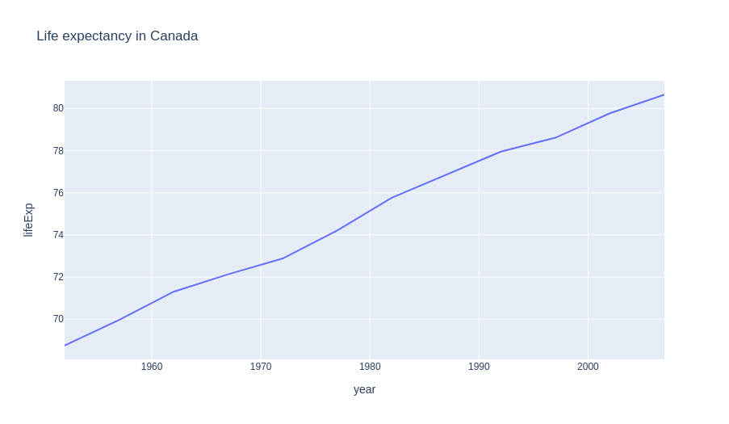
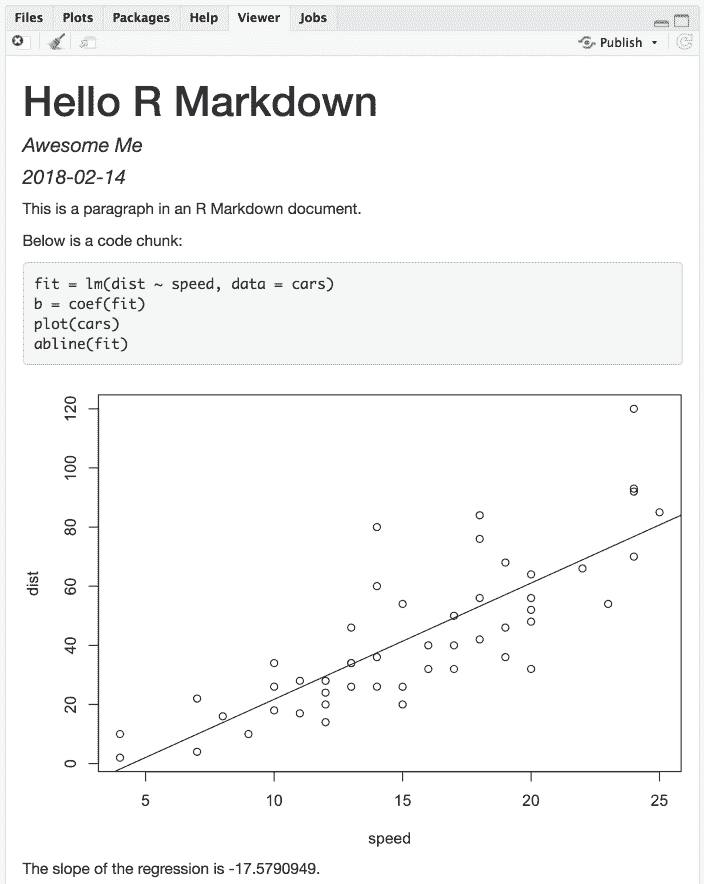
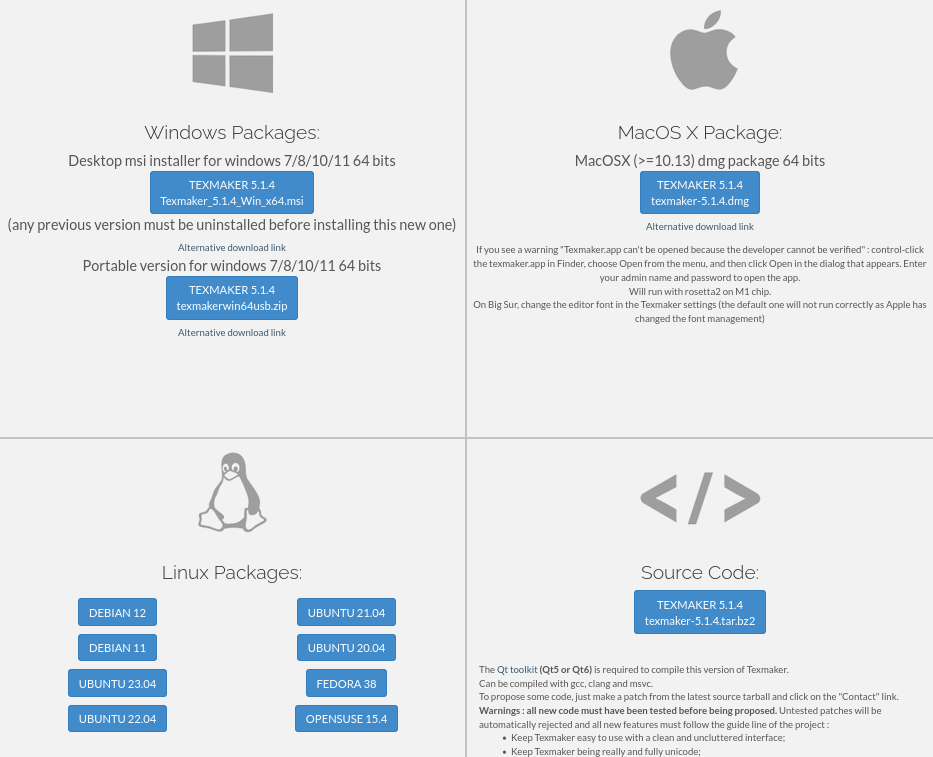

Interfaces y paquetes útiles en R y Python para el estadístico y el actuario
- Marite Marques Escobar
- Odalis Deyanira Rodriguez Clemente
- Johanna Elsirenny Alvarez Sanabria
- José Julián Villalba Vasquez
Paquetería en R y Python
¿Porqué usar paquetes?
- Aumentar las capacidades del lenguaje
- Para ahorrarnos trabajo
- ¿Si ya esta hecho para que hacerlo de nuevo?
- Seguramente alguien lo hizo mejor
La Red de Archivo Compresivo de R (CRAN en
inglés) es el principal repositorio de código de R, desde donde
descargar paquetería.
Instalación de paquetes en R
# Instala tidyverse
install.packages("tidyverse")
# Importa tidyverse
library(tidyverse)
De forma similar existe el
Indice de Paquetes de Python
abreviado PiPy en ingles.
Instalación de paquetes en Python
¿Instalación global, PyEnv o Conda?
Análisis de datos.
Herramientas para analizar datos:
Microsoft Power BI
Programa en R
Programa en Python
SAS
Tableau Public
Rapid Miner
Apache Spark.
Paquetes útiles de Python
Una herramienta de análisis y manipulación de datos rápida,
poderosa, flexible y fácil de usar
import pandas as pd
df2 = pd.DataFrame({
"A": 1.0,
"B": pd.Timestamp("20130102"),
"C": pd.Series(1, index=list(range(4)), dtype="float32"),
"D": np.array([3] * 4, dtype="int32"),
"E": pd.Categorical(["test", "train", "test", "train"]),
"F": "foo",
})
df2
Out[11]:
A B C D E F
0 1.0 2013-01-02 1.0 3 test foo
1 1.0 2013-01-02 1.0 3 train foo
2 1.0 2013-01-02 1.0 3 test foo
3 1.0 2013-01-02 1.0 3 train foo

Una librería para hacer gráficos interactivos listos para
publicación.
Ejemplo de Plotly
import plotly.express as px
df = px.data.gapminder().query("country=='Canada'")
fig = px.line(
df,
x="year",
y="lifeExp",
title='Life expectancy in Canada')
fig.show()
Ejemplo de Plotly

Una librería que provee algoritmos para optimización integración,
interpolación, problemas de autovalores, ecuaciones algebraicas,
ecuaciones diferenciales, estadísticas y muchos otras más.
Paquetes útiles de R

Una colección de paquetes con criterios comunes de R diseñada
para la ciencia de datos, todos los paquetes que la componen
comparten filosofía, gramática y estructuras de datos.
- ggplot2 Un sistema para crear gráficos de forma declarativ
- dplyr Una forma gramática para la manipulación de datos
- tidyr Un conjunto de funciones que ayudan a ordenar la data
- readr Una forma fácil y amigable de leer data rectangular
Un pequeño ejemplo
| id | sobrevivió | clase | nombre | sexo | edad |
|---|---|---|---|---|---|
| 1 | 0 | 3 | Braund, Mr. Owen Harris | male | 22 |
| 2 | 1 | 1 | Cumings, Mrs. John Bradley (Florence Briggs Thayer) | female | 28 |
| 3 | 1 | 3 | Heikkinen, Miss. Laina | female | 26 |
Un pequeño ejemplo
#Import the Tidyverse
library(tidyverse)
# Import data
pasajeros <- read.csv("data/train.csv")
pasajeros %>%
summary()
Un pequeño ejemplo
## PassengerId Survived Pclass
## Min. : 1.0 Min. :0.0000 Min. :1.000
## 1st Qu.:223.5 1st Qu.:0.0000 1st Qu.:2.000
## Median :446.0 Median :0.0000 Median :3.000
## Mean :446.0 Mean :0.3838 Mean :2.309
## 3rd Qu.:668.5 3rd Qu.:1.0000 3rd Qu.:3.000
## Max. :891.0 Max. :1.0000 Max. :3.000
Un pequeño ejemplo
pasajeros %>%
drop_na()
pasajeros %>%
filter(sexo == "male")
passengers %>%
arrange(desc(Pclass))
passengers1 <- passengers %>%
mutate(sobrevivio = ifelse(sobrevivio == 0, "No", "Yes"))
RMarkdown es una herramienta para convertir tus
análisis en documento, reportes, presentaciones y tableros de
alta calidad.
Ejemplo de RMarkdown
# Hola R Markdown
Es
Esto es un fragmento de código:
```{r}
fit = lm(dist ~ speed, data = cars)
b = coef(fit)
plot(cars)
abline(fit)
```
The slope of the regression is `r b[1]`.
Ejemplo de RMarkdown

Presentación de Informes
Importancia para la Estadística para presentar Informes
Software para presentar informes estadísticos:
SPSS
Microsoft Excel
SAS
Tableau Public
Stata
Nvivo.
¿Qué es LaTeX?
Un sistema de composición de textos, orientado a la creación de documentos escritos que presenten una alta calidad tipográfica. Por sus características y posibilidades, es usado especialmente en la creación de textos científicos.Documento de latex
\documentclass[10pt]{article}
\begin{document}
Hola mundo
\end{document}
Expresión en latex
\documentclass{standalone}
\begin{document}
\begin{equation}
\int_{a}^{b} f(x) \; dx
= \lim _{n \to \infty}
\frac{b-a}{n}
\sum_{k=1}^{n} f \left( a+k \; {\frac {b-a}{n}} \right).
\end{equation}
\end{document}
Expresión en latex
Interfaz de linea de comandos
LaTeX cuenta con diversas opciones para ser utilizado desde
consola con utilidades como pdflatex,
latexmk entre tantas otras, sin embargo esto
puede resultar tedioso y por tanto pueden preferir otras
alternativas
TexMaker es un editor de código abierto,
multiplataforma, que integra muchas herramientas necesarias para
desarrollar documentos con LaTeX, en una sola aplicación
Instalación de TexMaker
Instalación de TexMaker
Seleccione la versión correspondiente a su sistema operativo e instale como cualquier otro programa
Un editor de LaTeX de fácil uso. Online y sin instalación, con
capacidades de edición en tiempo real, sistema de control de
versiones y muchas plantillas predefinidas
- Escritura de artículos científicos
- Elaboración de tesis y disertaciones
- Preparación de presentaciones
- Creación de informes y documentos técnicos
- Colaboración en tiempo real
- Publicación y compartición de documentos